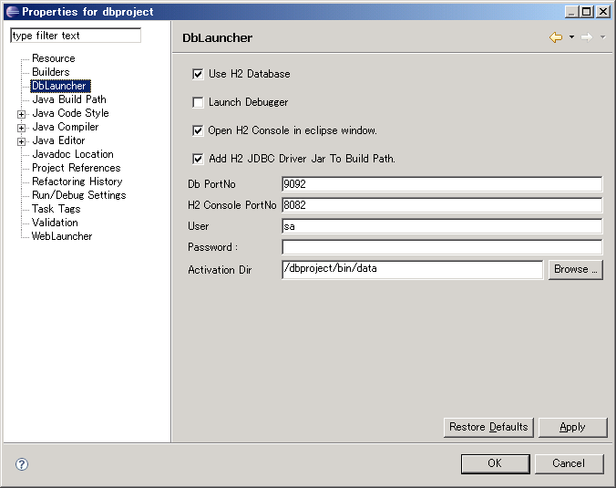
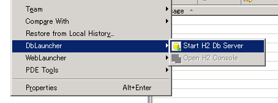
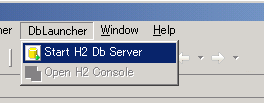
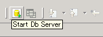
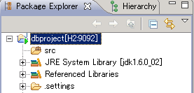
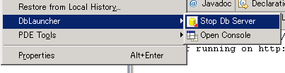
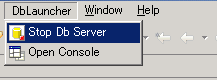
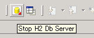

How to Use DbLauncher
- In the Package Explorer, Select project.
- Select Property from the project's context menu.
- Select DbLauncher in the project properties page.

- Check Use H2 Database
- Click OK
- You can start H2 Database by three way.
- Select DbLauncher > Start H2 Db Server from the project's context menu.

- Select DbLauncher > Start H2 Db Server in the menu bar.

- Click the Start H2 Db Server button in the toolbar.

- If Dblauncher start H2 Database successfully, project's icon and label is decorated.

- You can stop H2 Database by same way to start.
- Select DbLauncher > Stop H2 Db Server from the project's context menu.

- Select DbLauncher > Stop H2 Db Server in the menu bar.

- Click the Stop H2 Db Server button in the toolbar.
